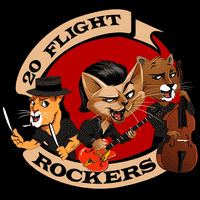

20 Flight Rockers - 20 Flight Rockers (EP, 2020)
01 - Hey Kitty (2:22)
02 - Blue Suede Shoes And An Orange Guitar (3:40)
03 - Ontario Rawker (2:27)
04 - Memory Lane (3:52)
05 - Part Time Jiver (3:21)
© Cafcae Records :: [Digital]
Notes
reference information: official website
Review
325/366 (Project 366)
Canadian rockers make their punky Rock'n'Roll jive. And they do it with a spark. Vibrant guitars, shaky rhythm, loud drums, mental singing and Rockabilly life style. Bumbling and hulking tunes, but somehow rather enthusiastically. The third track "Ontario Rawker" reminded me of some (neo)Rockabilly blasts, but here it is probably (neo)Rawkabilly. Which is also generally fancy. The fourth track "Memory Lane" is a love song. And interestingly perceived in the context of the cover of this EP. Quite soft sound, comely and touching in some way. Although it is very bass. The fifth song, "Part Time Jiver", and the first two songs ("Hey Kitty", "Blue Suede Shoes And An Orange Guitar") are perhaps about their direct way and style. Quite peculiar one. In all songs you can find something interesting, but in each you can find something strange.